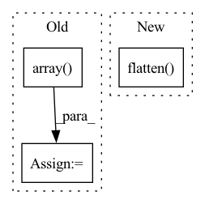

Pattern ID :13602
Before Change
// Assume that the person is centerered in the image
height = img_for_crop.shape[0]
width = img_for_crop.shape[1]
center = np.array( [width // 2, height // 2])
scale = max(height, width) / 180
if hps_type == "hybrik":After Change
human_ids = torch.logical_and(
predictions["labels"] == 1,
predictions["scores"] == predictions["scores"].max()).nonzero().squeeze(1)
bbox = predictions["boxes"][human_ids, :].flatten() .detach().cpu().numpy()
width = bbox[2] - bbox[0]
height = bbox[3] - bbox[1]In pattern: SUPERPATTERN
Frequency: 3
Non-data size: 3
Instances Fragment ID: 45704712
Project Name: yuliangxiu/icon
Commit Name: 2117636e701293c457554812067b272fcf3f8252
Time: 2022-10-10
Author: yuliang.xiu@tuebingen.mpg.de
File Name: lib/pymaf/utils/imutils.py
M Class Name: AnonimousClass
N Class Name: AnonimousClass
M Method Name: process_image(5)
N Method Name: process_image(6)
M Parent Class:
N Parent Class:
M File Name: lib/pymaf/utils/imutils.py
N File Name: lib/pymaf/utils/imutils.py
M Start Line: 91
M End Line: 132
N Start Line: 111
N End Line: 128
Before Change
cc = np.sort(cc, axis=0)
centers += [cc]
centers = np.array( centers)
mean = centers.mean(axis=2)
std = centers.std(axis=2)
return mean, stdAfter Change
mean = []
std = []
for idx in range(num_meters):
meter = ser[:, :, idx].flatten()
kmeans = KMeans(n_clusters=2).fit(meter)
labels = kmeans.labels_
lab0 = meter[labels == 0]
lab1 = meter[labels == 1] Fragment ID: 45704715
Project Name: uca-datalab/nilm-thresholding
Commit Name: 2b24d37855791e9ca50d60b2d7a9443f09a1cc70
Time: 2020-05-12
Author: danipg1409@gmail.com
File Name: better_nilm/model/preprocessing.py
M Class Name: AnonimousClass
N Class Name: AnonimousClass
M Method Name: _get_cluster_centroids(1)
N Method Name: _get_cluster_centroids(1)
M Parent Class:
N Parent Class:
M File Name: better_nilm/model/preprocessing.py
N File Name: better_nilm/model/preprocessing.py
M Start Line: 212
M End Line: 229
N Start Line: 212
N End Line: 228
Before Change
means[idx, 0] = meter[~mask_on].mean()
means[idx, 1] = meter[mask_on].mean()
means = np.array( means)
return means
After Change
for idx in range(ser.shape[2]):
// Flatten the series
meter = ser[:, :, idx].flatten()
mask_on = status[:, :, idx].flatten() > 0
means[idx, 0] = meter[~mask_on].mean()
means[idx, 1] = meter[mask_on].mean()
Fragment ID: 45704710
Project Name: uca-datalab/nilm-thresholding
Commit Name: 11ab7031844840891ba33cd1b1454b6cefbedd92
Time: 2020-07-23
Author: danipg1409@gmail.com
File Name: better_nilm/threshold.py
M Class Name: AnonimousClass
N Class Name: AnonimousClass
M Method Name: get_status_means(2)
N Method Name: get_status_means(2)
M Parent Class:
N Parent Class:
M File Name: better_nilm/threshold.py
N File Name: better_nilm/threshold.py
M Start Line: 74
M End Line: 78
N Start Line: 72
N End Line: 75